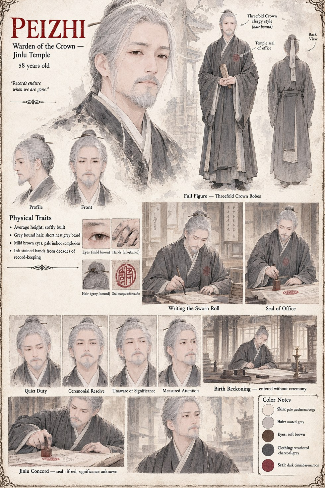

Peizhi
Warden of the Crown, Jinlu Temple · 58 years old
Warden of the Crown at Jinlu Temple, ink-stained from decades of exactly the kind of record-keeping that gives the Threefold Crown's Father's Reckoning its legal teeth: whoever a ceremony declares a father to be becomes, for every purpose the realm recognizes, the truth. He enters Prince Jiyun's own Reckoning without any particular ceremony, one birth among the many he has recorded, never once suspecting that this specific entry will end up mattering more than any other line in his temple's ledgers.
He affixes the temple's seal to the Jinlu Concord years later with the same unhurried, professional attention, still unaware that the peace he is witnessing and the Reckoning he once wrote down are, in the most literal sense, the same document's two halves.
“Records endure when we are gone.”
Appears in The Listening Water